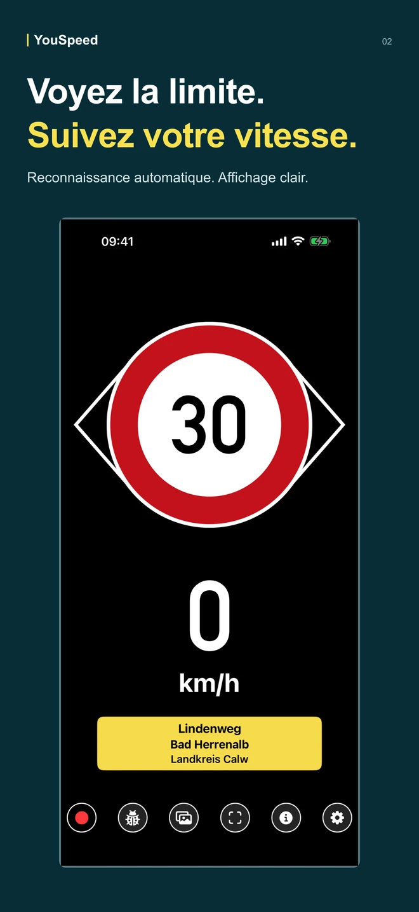
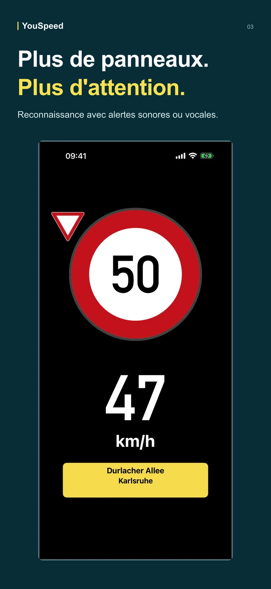
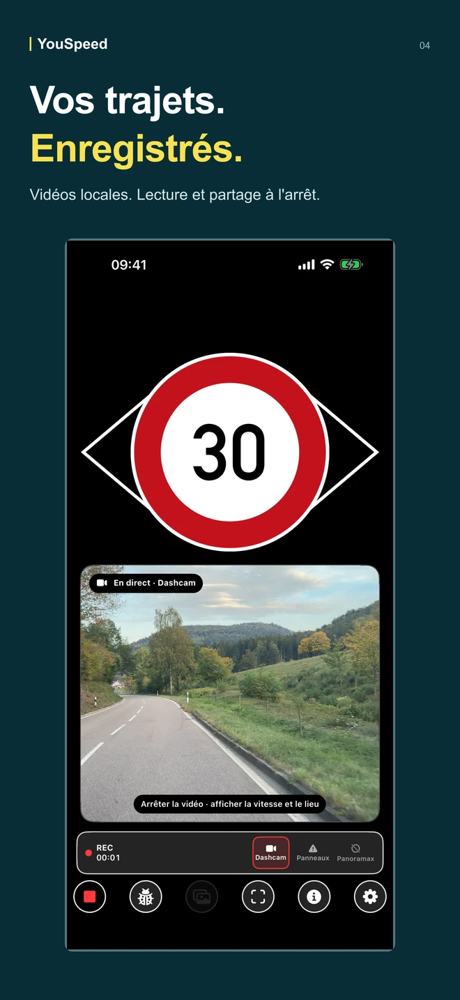
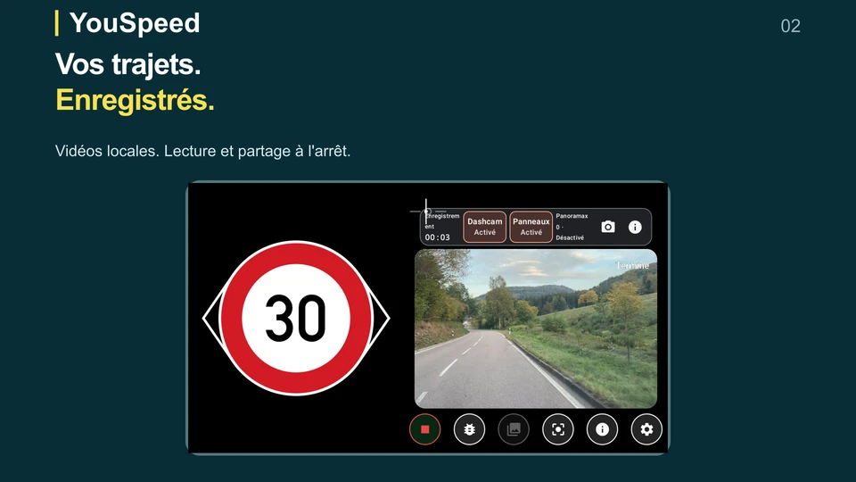

Reconnaître les panneaux automatiquement
La caméra reconnaît les limitations et d’autres panneaux sur votre appareil. Choisissez un son ou une annonce vocale. Les panneaux pris en charge dépendent du pays et du modèle installé.
Version 1.3 · iPhone & Android
Roulez prudemment. Dans toute voiture.
Votre smartphone devient votre compagnon de route : reconnaissance automatique des panneaux, alertes de vitesse, estimation des sanctions et dashcam. Quel que soit l’âge de votre voiture.
Android 14 ou ultérieur · arm64-v8a (la plupart des smartphones actuels) · 348 Mo


Consulter
Fonctions de l’app
La reconnaissance des panneaux, les enregistrements locaux et les références hors ligne complètent l’affichage de vitesse et les alertes.
La caméra reconnaît les limitations et d’autres panneaux sur votre appareil. Choisissez un son ou une annonce vocale. Les panneaux pris en charge dépendent du pays et du modèle installé.
Conservez les vidéos localement et regardez-les à l’arrêt. Partagez ou supprimez les enregistrements et choisissez ce que vous gardez.
Vérifiez les photos géolocalisées dans la galerie. L’envoi optionnel vers Panoramax ne démarre qu’après votre sélection et nécessite un compte connecté et internet.
Dans Info, consultez les barèmes d’amendes par pays et un catalogue de panneaux avec pictogrammes et noms prononcés. Disponibles hors ligne, à titre indicatif.
Recherchez des pays et des régions, consultez les dates et tailles des paquets, puis téléchargez ou supprimez chaque carte indépendamment. Les pays pris en charge comprennent l’Allemagne, la France, la Suisse, la Belgique et les Pays-Bas.
La 1.3 améliore le changement de cartes aux frontières, le traitement GPS et la continuité du positionnement sur la route. L’app est disponible en français, allemand, anglais et néerlandais.



Vues de démonstration iPhone issues des visuels de la version 1.3. L’illustration de la dashcam associe l’interface à une image d’un véritable enregistrement.
Télécharger
La version Android signée est disponible au format APK sur GitHub. Téléchargez vos cartes avant de partir et configurez l’app à l’arrêt.
Android 14 ou ultérieur · arm64-v8a (la plupart des smartphones actuels) · 348 Mo
La 1.3 est disponible directement pour Android. Sa publication sur Google Play et l’App Store est en attente ; les liens ouvrent la version actuellement disponible dans chaque boutique.

Affichage en direct
YouSpeed réduit la vue conduite à la vitesse, la limitation et la conséquence. Les couleurs suivent l'app : neutre, amende, points, interdiction et Autobahn sans limitation.


YouTube · 1.3
Découvrez la reconnaissance des panneaux, la dashcam, les photos de route et la configuration avant de partir. En anglais avec sous-titres.
Confiance
YouSpeed est une app d'assistance. Les panneaux, les règles de circulation et les avis officiels font foi.
Les données de vitesse reposent sur les tags OSM comme maxspeed, maxspeed:type et source:maxspeed.
Les données sont sous Open Database License. L'attribution revient aux contributeurs OpenStreetMap.
Le positionnement reste clair : pas de publicité et pas de suivi.
Moonshots Studios exploite et distribue YouSpeed. Pour les questions de confidentialité, de store et de distribution, contactez directement l'exploitant.